Undergraduate Portfolio · 2022–2026
Undergraduate Portfolio · 2022–2026
Contents

Major Project · 2026

Urban Strategy · 2026
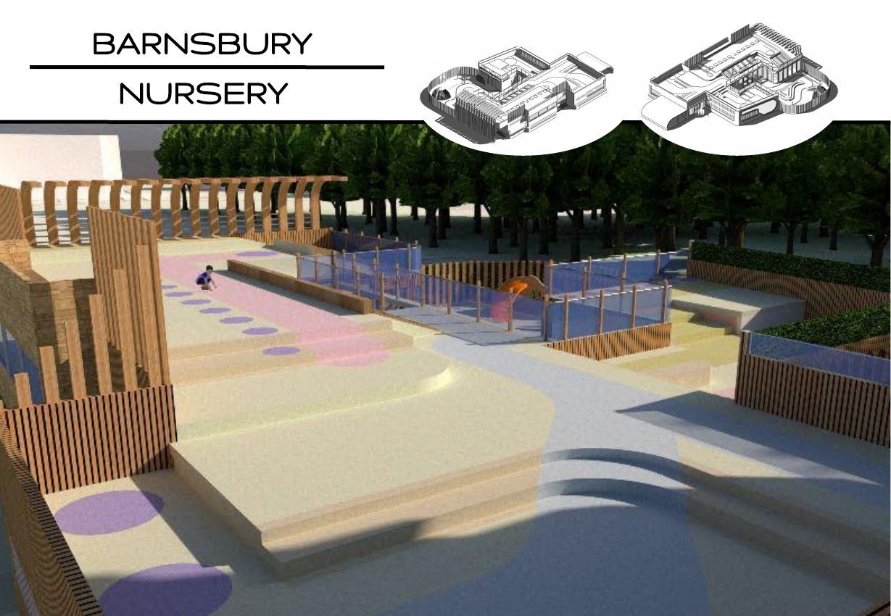
Education · 2024

Community · 2025
01 · Major Project · Phase 2 · 2026
Civic Maritime Hub · The Hard, Portsmouth · RIBA Stages 0–3
Overview
A civic maritime hub on Portsmouth's southern waterfront, occupying a historically sensitive site at The Hard - the threshold between the naval dockyard and the city. Three marine environmental charities occupy public galleries alongside a shared research workshop, wet lab, and internal dock.
Visitors can observe active research directly, without glass or distance framing it as spectacle. A restaurant, cafe, lecture theatre, and residential apartments complete the programme above. The building reads as landscape before it reads as architecture: a green berm rises from the public realm and forms a continuous accessible roof.
Materials are drawn from the industrial waterfront: GGBS concrete, corten steel, and timber. Nothing was chosen for effect alone.


"Architecture is the step beyond building. I want to make places people choose to go to - spaces that do not demand money to be enjoyed. Architecture that belongs to more than its owner."Conrad Tebje · Personal Manifesto
Concept & Process
The design began with the ground. The berm is not a formal device - it responds to the flood risk of a waterfront site, creates a continuous public roof, and screens the dock from street noise without closing it off.
Early work focused on the relationship between the research wing and the public galleries. Several configurations were tested before settling on a lateral arrangement - research and exhibition genuinely adjacent rather than stacked.

Technical Drawings


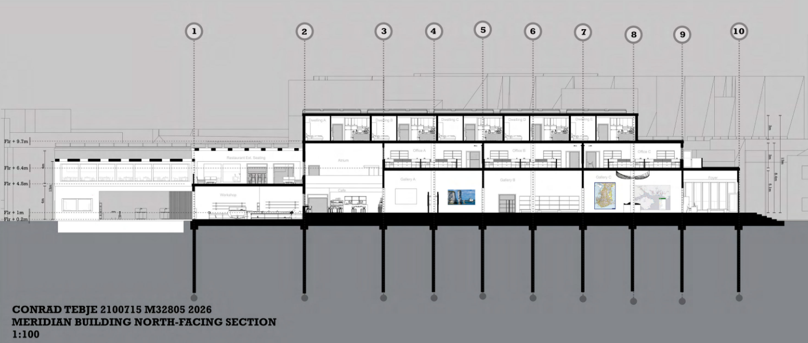


02 · Major Project · Phase 1 · 2026
Urban Strategy · Team Project · Leadership Role
Urban Strategy
Phase 1 was a team-led masterplanning exercise for Old Portsmouth. I interpreted the brief, organised workflow, delegated tasks based on individual strengths, and guided key design decisions across a site encompassing the entirety of Old Portsmouth.
The masterplan centred on selective removal: the SubseaCraft office building and the Wightlink terminal were identified as structures that occupied prime waterfront land without contributing public value. Removing them created the land needed to build something the city could use.
The proposal introduced a research centre, education facility, gallery, pavilion, market space, social hub, and residential zone - a sequence of uses designed to generate activity across the full day. This phase directly shaped the site and programme for Phase 2.
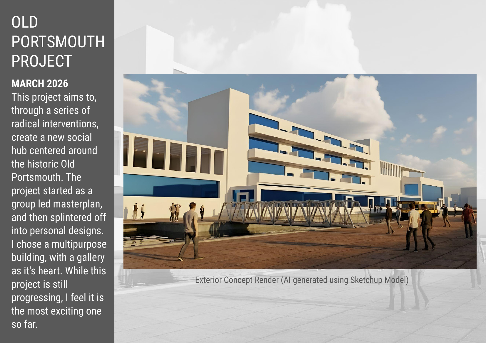
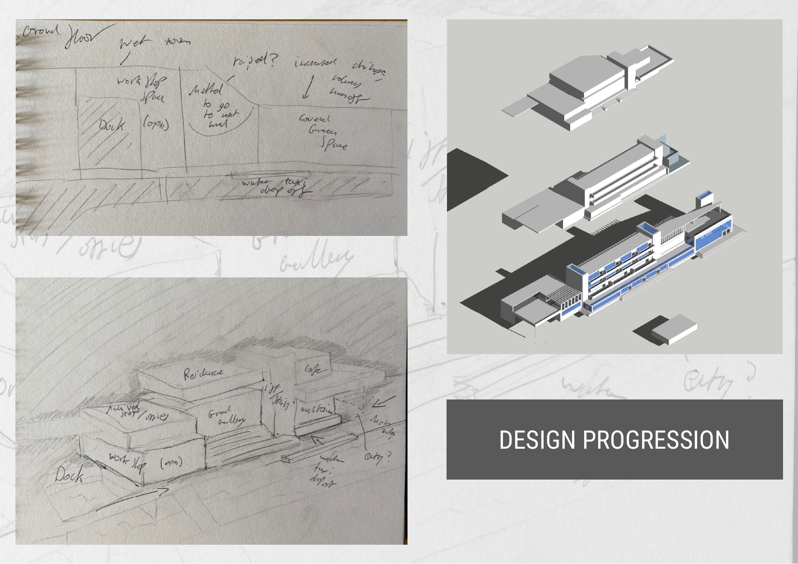
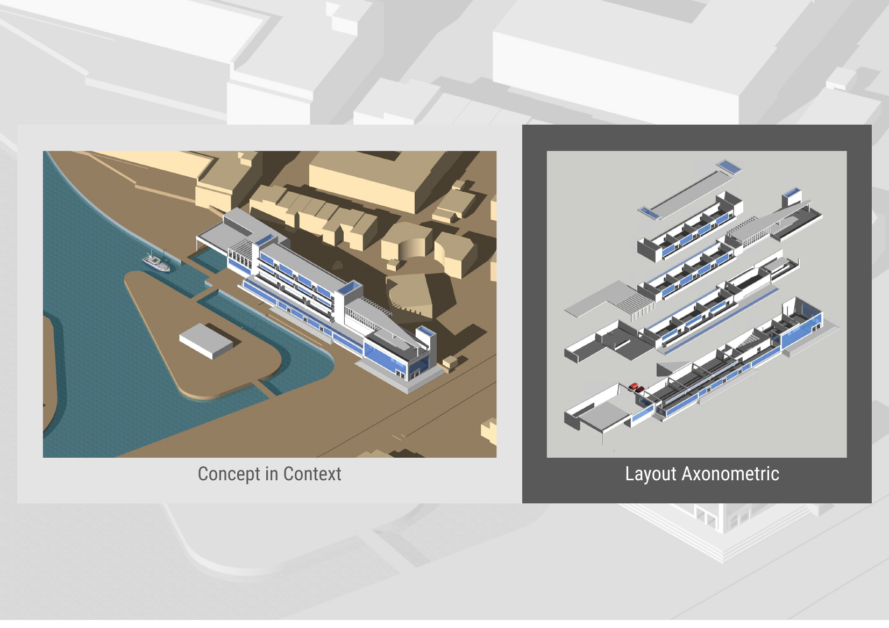
Analysis
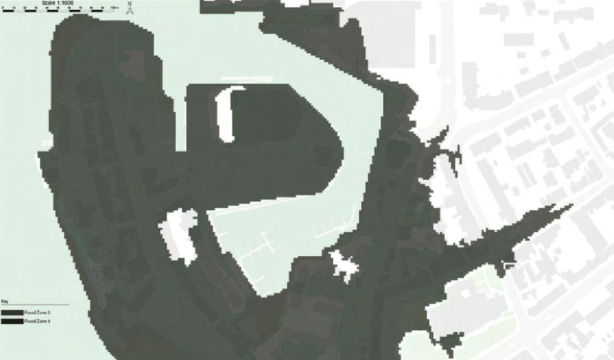
03 · Education · November 2024
Child-Centred Design · Eastney, Portsmouth
Overview
A new nursery within Barnsbury Park, Eastney - low-rise, timber-clad, sized for children rather than adults. The brief asked for spaces informed by how young children actually move, perceive, and inhabit space. Montessori and Waldorf Steiner pedagogy shaped the design approach.
The building is organised as a connected C-shaped plan. Rooms flow into each other rather than separating behind closed doors - baby area, toddler space, preschooler room, staff facilities - with a first-floor outdoor deck extending usable area without increasing the footprint.
Portholes in the boundary wall sit at child height. Nooks scaled for hiding, a raised platform for movement, and a pastel ground plane suggesting play without prescribing it.
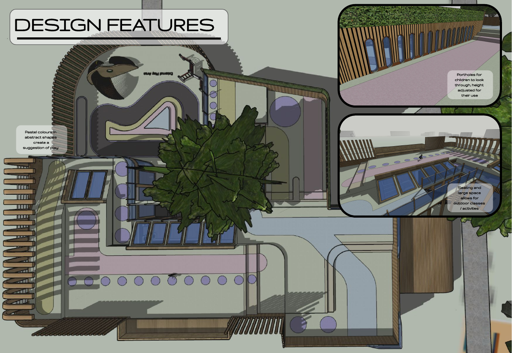
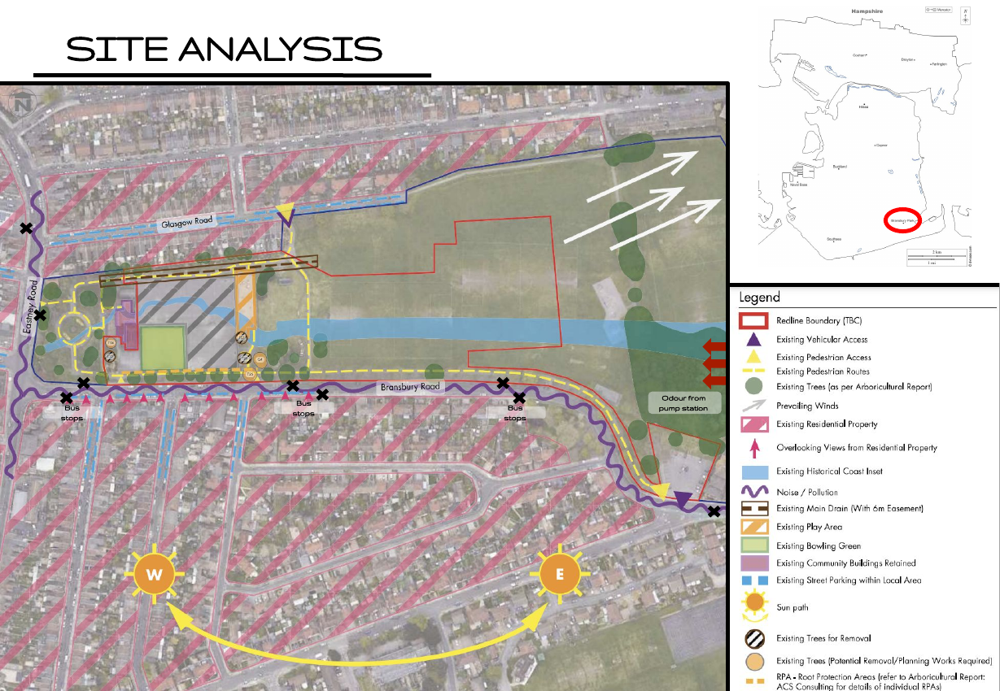
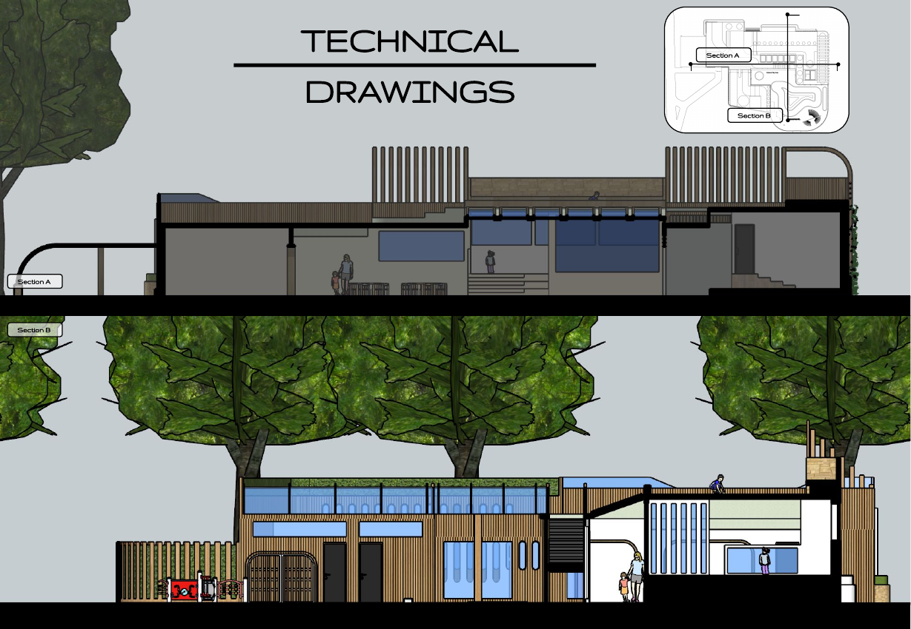
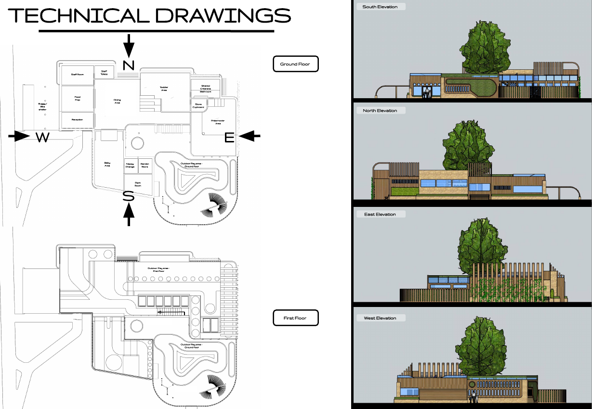
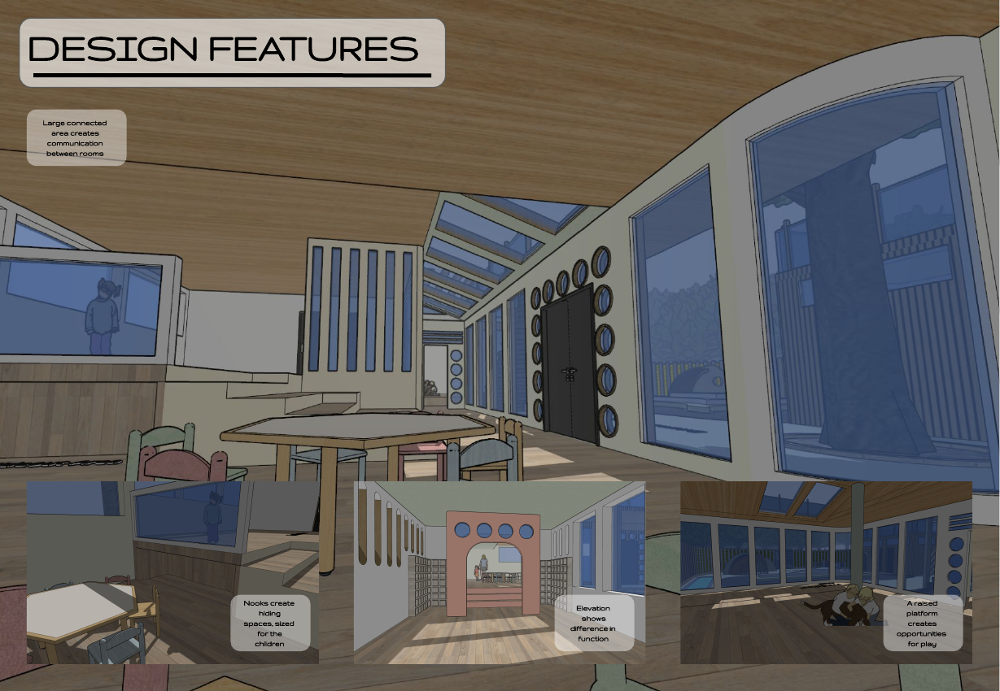
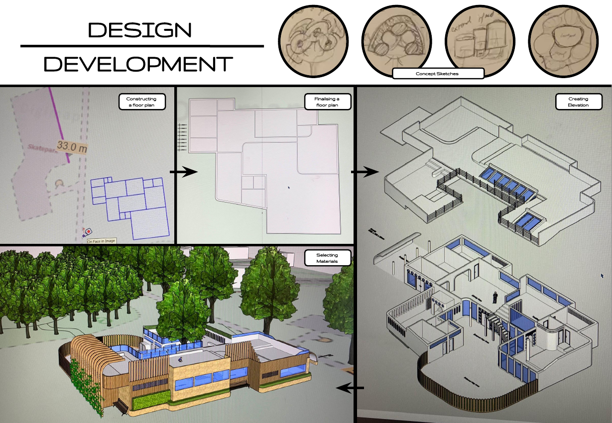
04 · Community · May 2025
Community & Sanctuary · Portsmouth City Centre
Narrative & Concept
The brief placed heavy emphasis on narrative - understanding as deeply as possible what the users of this building have been through to get here. The design responds by functioning as an oasis: a place of rest, shelter, and gradual reintegration after displacement.
Inspired by Francis Alÿs' Sometimes Making Something Leads to Nothing, a mapping exercise translated the refugee journey into physical form - erosion of identity along the way, roots that can grow again at the destination.
A long corridor with repeating undulating arches references the journey itself. Gathering spaces face south. The residential block sits at the quietest point on the site. Public space transitions to private space through materials: concrete to wood, open to enclosed.
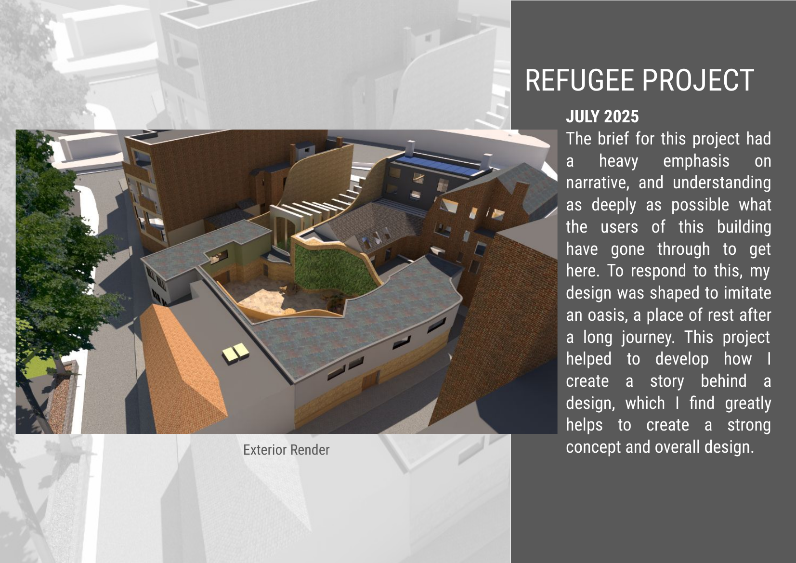

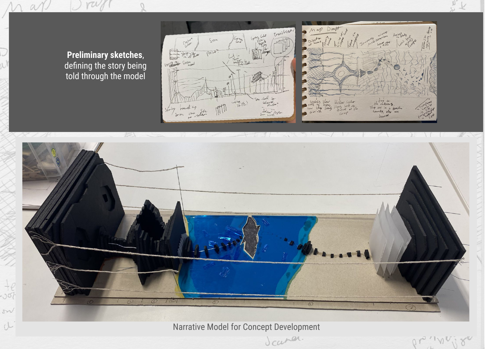

05 · Dissertation · January 2026
The Tricorn Centre and Public Perception
Research
Portsmouth's Tricorn Centre opened in 1966 as one of Britain's most ambitious Brutalist buildings. By 2001 it was voted the ugliest building in the country. It was demolished in 2004.
This dissertation argues that the Tricorn's failure was not inherent to its architecture, but the product of poor siting, long-term neglect, and cumulative hostile media framing. Drawing on archival newspaper research at Portsmouth History Centre, the study reconstructs how public hatred was gradually constructed over decades - until the building became a scapegoat for anxieties that had nothing to do with concrete.
The research speaks to something broader: demolition is so often a response to neglect rather than design. Narrative shapes the reception of a place, and once it is written, it is very hard to unwrite.
Dissertation
Reframing Brutalism:
The Tricorn Centre
and Public Perception
Conrad Tebje · University of Portsmouth · 2026
Artefact
Three abstract paintings tracing the Tricorn Centre's emotional trajectory: from the optimism of its inception, through public rejection, to the unresolved absence left after demolition. Acrylic and mixed media, 2026.
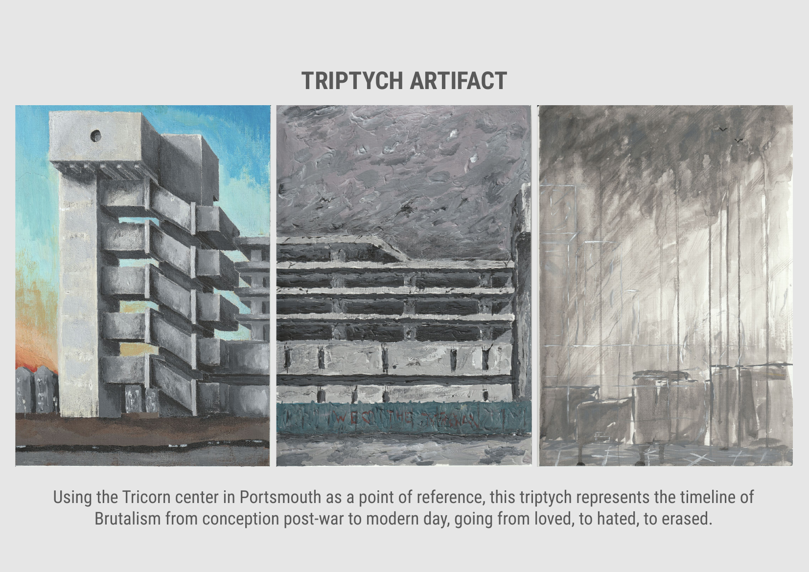
I - Brave New World
II - Rejection & Rupture
III - Void & Memory